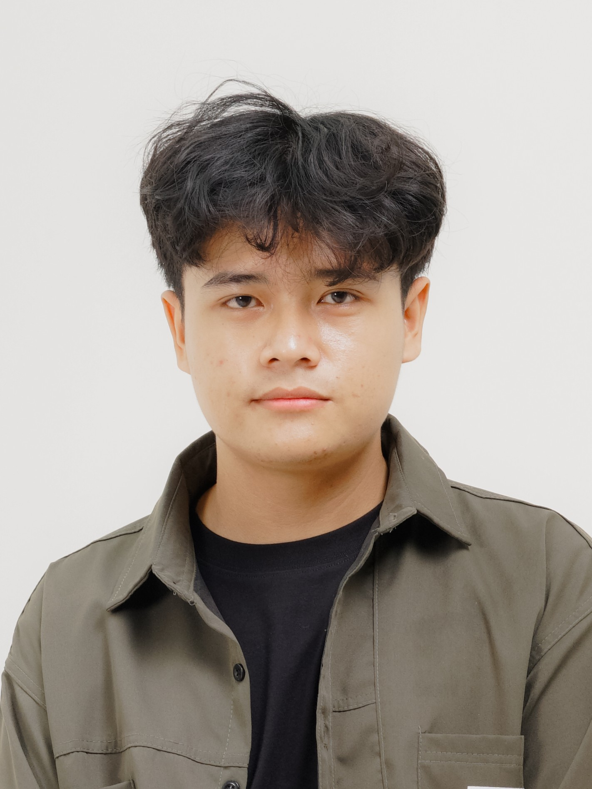
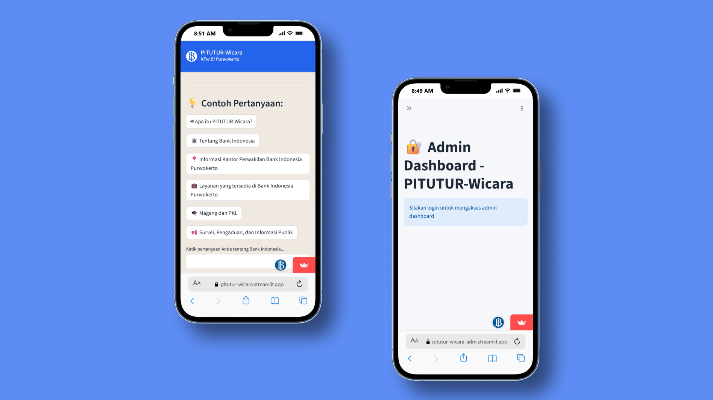
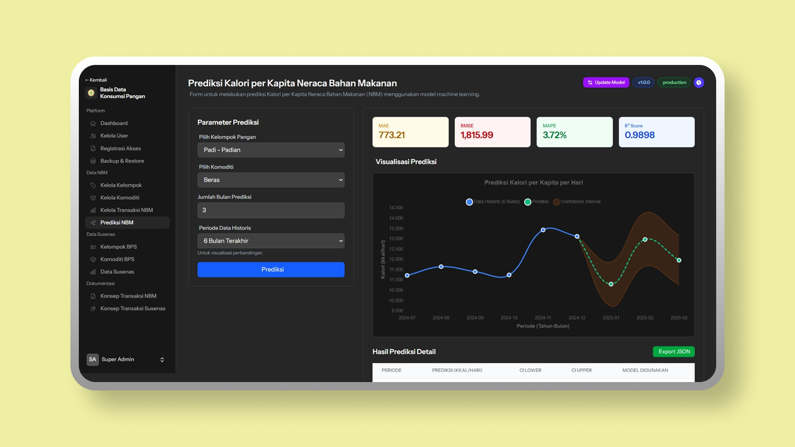
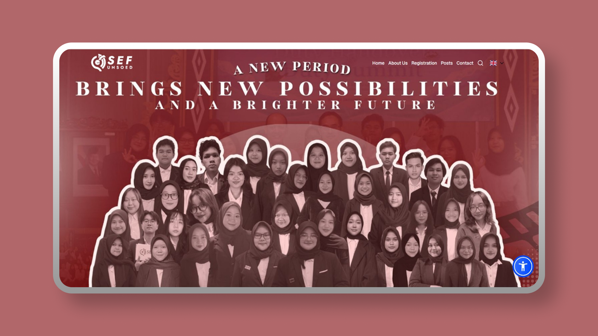
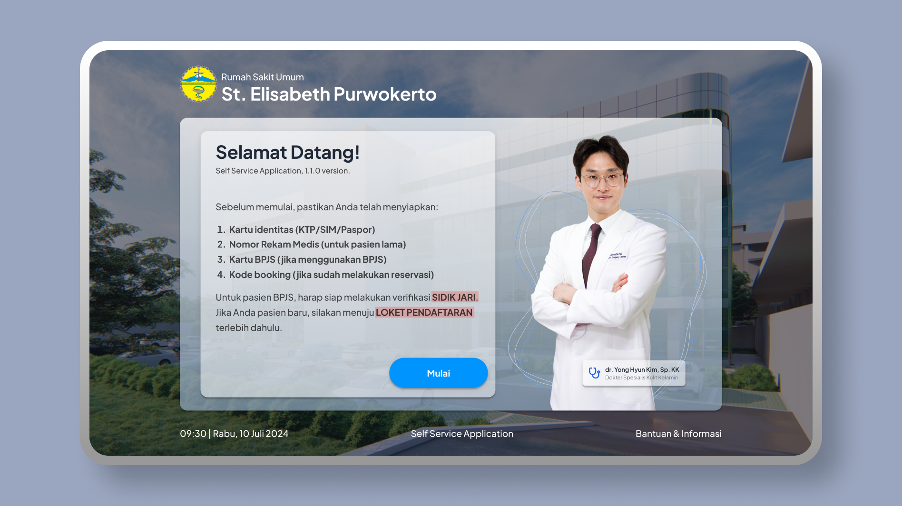
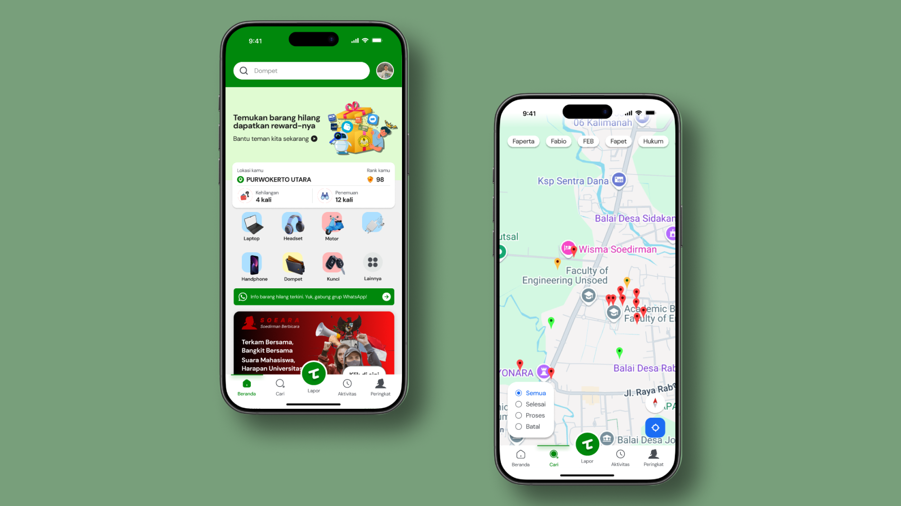
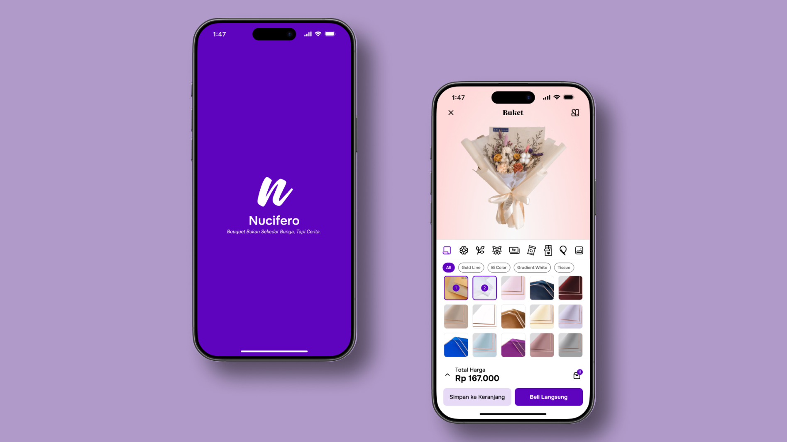

Full-Stack Developer · Informatics 2026
I build systems end-to-end from ML pipelines processing 48k+ records to production web apps with real users. Currently finishing my degree at Unsoed with a 3.88 GPA.

Jehian · Purwokerto, Indonesia
About
I'm Jehian a final-year Informatics student at Universitas Jenderal Soedirman with a deep interest in building things that work, and work well. My path has taken me from designing hospital kiosk systems on tight deadlines, to engineering ML pipelines for national-scale food security planning at the Ministry of Agriculture.
What drives me isn't the stack it's the problem. I'm drawn to the intersection of data and interfaces: systems where clean architecture in the back translates to real clarity for people in the front. I care about documentation, about teaching others, and about the kind of code that doesn't break at 2am.
Outside of work, I'm a workshop instructor, an open-source contributor, and someone who genuinely enjoys sitting with village elders in Banjarnegara to digitize historical manuscripts because technology is only interesting when it has a human story behind it.
Experience
Built a Chrome Extension automation tool for GNPIP food commodity data entry reducing multi-day manual workflows to hours. Engineered PITUTUR-Wicara, an AI chatbot powered by Gemini 1.5-flash with custom knowledge base, replacing the legacy system. Built 2 operational dashboards for administrative decision-making within the UDSK unit.
Developed an LSTM Enhanced Ensemble system processing 31 years of historical data (48,696 records, 112 food commodities) to forecast daily calorie consumption achieving 3.72% MAPE, surpassing the 10% target by 75% error reduction. Deployed via FastAPI + Laravel + Docker microservices architecture for Indonesia's food security planning serving 280M+ population.
Developed sefunsoed.site with Next.js and Supabase, integrated with Payload CMS for blog management and admin panel supporting 43 active users. Eliminated 100% of hosting costs via Vercel and Supabase free tiers.
Led 5 lab assistants, managing 6 weekly shifts of 20 students each. Guided development of 36 team-based web projects and mentored 60+ students across frontend, backend, and UI/UX roles.
Developed a self-service kiosk system from scratch in 1 month system analysis, web interfaces, database, and APIs. Presented to hospital staff and director, earning positive feedback.
Led BEM Unsoed's central data platform reaching 700 monthly visitors (5,600 total). Developed survey forum features and updated UI theme on WordPress. Built documentation site for data analyst team efficiency.
Selected Projects

AI chatbot for Bank Indonesia Purwokerto. Gemini 1.5-flash, custom knowledge base, real-time admin dashboard.

Ensemble ML system forecasting daily calorie consumption across 112 food commodities. MAPE 3.72% — 75% better than conventional methods.

Company profile with CMS, auth, blog management, 43 active users. Zero hosting cost via Vercel + Supabase.

Self-service kiosk for RSU St. Elisabeth full system analysis, web interface, database, and APIs in 1 month.

Geolocation mobile app to recover lost items via GPS and offline mapping. Finalist PKM Rektor Cup IV, Unsoed.

Personalized bouquet ordering app with florist-side management, recommendation flow, and shipping/payment journey designed through user personas, empathy maps, and iterative prototyping.
Publication
Fine-Tuned BERT achieved 91% accuracy and 0.91 F1-score on Indonesian Twitter sentiment data significantly outperforming the non-optimized baseline. Implemented as a Streamlit web application using IndoBERT-base-p1 with the CRISP-DM methodology.
Skills
Education
Data Mining · Machine Learning · AI · Web Programming · Mobile Programming · Computer Networks · IT Infrastructure · Information Security · Project Management · Software Engineering
Graduated with national software engineering competency certification. Proficient in Java, PHP, Flutter, Laravel, OOP, and database design.
Certifications
Volunteering & Teaching
Led development of petir-banjarnegara.desa.id via OpenSID. Coordinated with Kominfo for hosting. Created digital Babad Desa through elder interviews, web articles, and YouTube documentation.
Migrated registration website from WordPress to Next.js. Set up Moodle LMS. Wrote comprehensive documentation for future maintainers.
Delivered web training for 12 members covering HTML, CSS, JavaScript, PHP, WordPress, Elementor, and cPanel management.
Taught web programming to ~60 students. Conducted "Slicing Figma to HTML CSS" workshop for 30 participants with highly positive feedback.
Contact
Open to full-time roles, freelance projects, and interesting collaborations. Response within 24 hours.